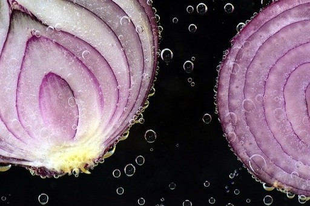
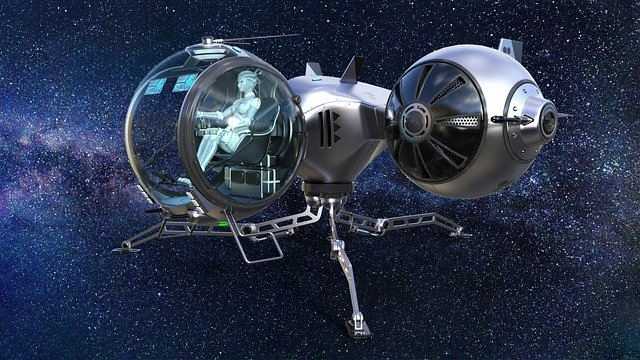
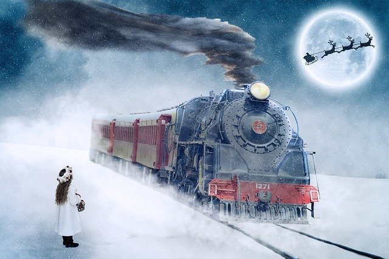

Was tomato ketchup a drug in history?
Yes. Tomato ketchup in the 1830s was sold as a medicine. A man, Dr. John Cook Bennett proposed that ketchup can be used as a drug for curing ailments like jaundice, diarrhea and indigestion. People readily accepted his idea and it soon became a huge market. Even 'tomato pills' were sold! The market was so competitive that it ultimately crashed in two decades. Thus, we got introduced to tomato ketchup in a completely different way. Do you know an average American eats 71 pounds of ketchup per year?
HISTORY
Quark by Abhigyan
8 May, 2020

How Nestle recovered from the Maggi Ban?
Lockdown times! What’s more easier to cook than our very own #MeriWaliMaggi? When Maggi was banned due to high levels of Monosodium Glutamate (MSG), it’s market share fell to an all-time low of 10.9% in Nov 2015. However, Maggi soon regained its market share to 57% by Aug, 2016. Nestle harped on positive word-of-mouth publicity through "We Miss You Maggi" campaigns even as they recalled 38,000 tonnes of stock from the shelves. Also, it worked on on-ground activations in smaller towns rebuilding trust amongst their consumers. Nestle gradually diversified their risk by introducing new categories in India.

How powerful was the Ahom Dynasty?
The Mughals ruled for around 214 years, the Mauryas 137 years and the Guptas 290 years. But for 598 years, the Ahoms ruled over Assam (1228 - 1826 AD) - undefeated & unbeaten. Do you know that the Ahoms were the only dynasty that the Mughal Empire could not defeat? But they defeated the Mughals freaking 17 times in 60 years. In the Battle of Saraighat, the Mughals came with 18000 Turkish cavalry, 5000 gunmen, 15000 archers, 30000 soldiers, and more than 1000 canons. Yet, the Commander-in-Chief of the Ahom Army, Lachit Barphukan led the battle and sought victory against them.
HISTORY
Quark by Abhigyan
5 May, 2020

Why do ‘Onions’ make us cry?
Onions belong to the Allium Family and produce tasty bulbs in the first year of its life-cycle to store energy. To stop predators from eating the bulb, it has a defence mechanism for its survival. Onions release a volatile chemical called propanethial S-oxide, which is also known as lachrymatory factor (LF). When onions are chopped, the cells within them are broken and release this eye-stinging volatile chemical. It quickly evaporates and reaches the eyes producing a small amount of acid. Reflexive tears well up as our defence mechanism to remove this pesky irritant from the eyes.
SCIENCE
Quark by Satabdi
4 May, 2020

What's the farthest man-made object from us?
Voyager 1 - a space probe launched by NASA is the farthest artificial object from the Earth. Till now it has travelled a total distance of 17.9 Billion kilometres since its launch from Florida on 5th Sep 1977. Light takes around 16 hours to travel from the probe to us. The probe is still moving with a velocity of 17,087 m/s (38,200 mph or 61,400 km/h). Most of its scientific equipment have already been shut down due to lack of power. In a few years, it will no longer be able to power its remaining equipment.

Can blind people dream?
Yes. Blind people can have dreams too. The subconscious mind starts functioning in our sleep and they are not an exception. However, the amount of visual dreams depend on what age they lost their sight. But people who are born blind mostly dream the same way as us with the other senses - touch, smell, hearing and taste. They do not have visual dreams. Not just humans, but do you know animals have dreams too? They dream about their day to day life, like grazing, hunting and surviving.
SCIENCE
Quark by Abhigyan
1 May, 2020

Who were the Visha Kanyas (Poison Damsels)?
Visha Kanyas (Poison Damsels) is first mentioned in Arthashastra written by Chanakya, an adviser and prime minister to the first Mauryan Emperor Chandragupta (340–293 BC). ‘Viṣakanyā’ also appears in Sanskrit literature as a type of assassin used by kings to kill their enemies. As per these stories, young girls were raised on a carefully crafted diet of poison and antidote from an early age. This technique is known as mithridatism. Many of these girls would die during ‘training’ but those who managed to survive become immune to various toxins. They would eventually become human weapons with extremely poisonous bodily fluids.
HISTORY
Quark by Abhik
30 April, 2020

Why do we say cheers while drinking?
Do you know why we say cheers with 'clunk' sound of the glasses? Do you know the reason behind that? We do this when we are celebrating some occasion or having a good time. So when we drink, we can 'see' the drink, 'smell' the drink, 'touch' the drink, 'taste' the drink. The only sense organ that doesn't come in the picture is the ear and hence the clunk sound so that we can 'hear' the sound and the happy occasion is now a culmination of all the five senses.

What is the world's most profitable company?
Saudi Aramco – Yes, you heard it right. According to Fortune magazine, the multinational petroleum and natural gas company headquartered in Saudi Arabia with an annual Net Income of $110 billion is the most profitable in the world. It is followed by Apple, Industrial and Commercial Bank of China, Samsung Electronics, and China Construction bank in the same order. While Apple makes a profit of $1,888 per second, Saudi Aramco makes a profit of $3,519 per second.

How electric eels produce electricity?
The bodies of electric eels have electric organs that are made up of electrolytes. These organs are lined up and stacked allowing them the ability to store power, much like small batteries inside a torch. Hence, each cell adds to a potential difference and a current of ions can flow through them. Electric eels, with their electric ability can communicate, navigate and stun their preys. They can discharge upto 860 volts and one ampere of current.
SCIENCE
Quark by Abhigyan
24 April, 2020

Is JellyFish really a Fish?
Jellyfish aren’t really fish but gelatinous zooplankton; composed of 95% water. The remaining 5% is structural proteins, muscles and nerve cells. They are made of a jelly-like material 'Mesoglea'. They got no brain, heart, bones or blood. They came 500 million years back, primitive to even dinosaurs. Some are even bioluminescent, producing their own light. Heard of Box jellyfish? The most venomous marine animals in the world! A type of jellyfish, Turritopsis Dohrnii is the only animal in the world that can reverse its lifecycle and hence called immortal.
SCIENCE
Quark by Satabdi
23 April, 2020

Which is the happiest country in the world?
According to the World Happiness Report released by the United Nations on March 20, 2020, Finland has been ranked as the happiest country in the world for the third consecutive year followed by Denmark and Switzerland. Ranked at 144, India occupied the bottom ten spots of the report. The World Happiness Report is a survey which grades countries using the Gallup World poll and other factors such as levels of GDP, life expectancy, generosity, social support, freedom and corruption income.

Why does the sky appear blue?
Sunlight is made of different colours of light which have different wavelengths. The atmosphere of the earth is composed of very small molecules of Nitrogen, Oxygen, Water Vapour, Carbon Dioxide, Argon and traces of other gases. These molecules scatter the shorter and higher-energy wavelengths of light more efficiently than other wavelengths. Though violet light is scattered more than blue light, our eyes respond more strongly to blue light and hence the sky appears blue.
SCIENCE
Quark by Angshuman
20 April, 2020